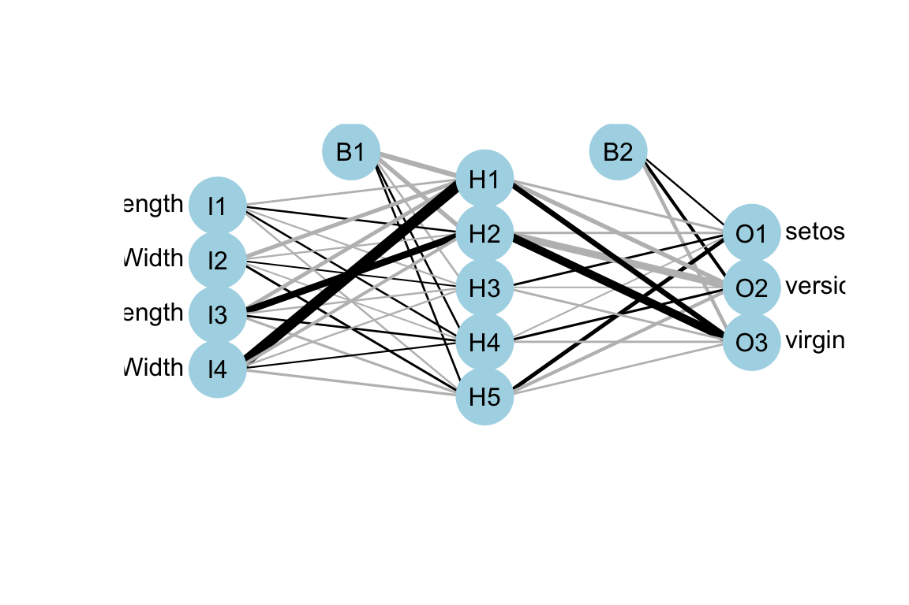

Neural networks are a class of machine learning algorithms that are inspired by the structure and function of the human brain. Like random forests, they are used for both classification and regression tasks. However, instead of using a collection of decision trees, neural networks consist of layers of interconnected nodes (or neurons) that can process and learn from complex data.
It’s possible to use gradient boosting with other types of models, including neural networks. In this case, instead of combining decision trees, the algorithm combines multiple neural networks to create a powerful ensemble model. The main idea remains the same: iteratively train models on the residual errors of the previous models to minimise a loss function.
The basic building block of a neural network is the perceptron, which takes in a set of inputs, applies weights to them, and produces an output. These outputs are then passed through activation functions that determine whether the neuron will fire or not. By stacking layers of perceptrons and activation functions, a neural network can learn to model highly non-linear relationships in the data.
The following R code demonstrates creating and visualising a feedforward neural network using the nnet and deepnet packages. It uses the iris dataset to predict species based on sepal and petal dimensions. The numeric features are normalised, and the target variable is converted to a factor. A neural network with one hidden layer containing 5 neurons is defined and trained using the logistic activation function and a maximum of 100,000 iterations. Finally, the network architecture is visualised using the plotnet function from the deepnet package.
library(nnet)library(deepnet)library(NeuralNetTools)# Load datadata(iris)# Normalize the numeric featuresnormalize<-function(x){return((x-min(x))/(max(x)-min(x)))}iris[,1:4]<-lapply(iris[,1:4], normalize)# Convert the target variable into a factoriris$Species<-as.factor(iris$Species)set.seed(42)# Define the neural network architecturenn<-nnet(Species~Sepal.Length+Sepal.Width+Petal.Length+Petal.Width, data =iris, size =5, act.fct ="logistic", linout =FALSE, maxit =1e+05)#> # weights: 43#> initial value 180.827907 #> iter 10 value 9.913449#> iter 20 value 6.015153#> iter 30 value 5.921213#> iter 40 value 5.553101#> iter 50 value 4.239151#> iter 60 value 1.156178#> iter 70 value 0.296792#> iter 80 value 0.012652#> iter 90 value 0.006984#> iter 100 value 0.000851#> iter 110 value 0.000175#> final value 0.000060 #> converged# Visualiseplotnet(nn)

The example neural network only has 1 hidden layer, however, it can have many hidden layers, which allows them to capture highly complex patterns and relationships in the data. However, this complexity can also lead to overfitting, where the model fits the training data too closely and fails to generalise to new data. To avoid overfitting, techniques like regularisation and early stopping can be used.
In the next example, we’ll demonstrate L2 regularisation in a neural network using the keras package in R. We will continue using the iris dataset for this illustration. Our goal is to predict the species of iris flowers based on their sepal and petal dimensions.
Note the l2_regularizer applied in the code, which is a popular technique used to prevent overfitting in machine learning models by adding a penalty term to the loss function. In a advanced course of neural networks, you may also encounter advanced regulisation techniques including dropout, batch normalisation, data augmentation, early stopping, and adversarial training to prevent overfitting and improve generalisation performance.
Hyperparameters
The terms such as epochs, batch_size and validation_split as in the above code are called hyperparameters in machine learning. One of the key challenges in neural networks is the tuning of hyperparameters, such as the number of layers and nodes in each layer, the learning rate, and the activation function. Finding the optimal values for these hyperparameters can be time-consuming and computationally expensive.
Despite these challenges, neural networks have shown to be highly effective in a wide range of applications, such as image and speech recognition, natural language processing, and predictive modelling. In fact, deep learning, which refers to the use of neural networks with many layers, has revolutionized many fields, including computer vision and natural language processing.
Deep learning
Deep learning is a subfield of machine learning that uses artificial neural networks with multiple layers to learn hierarchical representations of data. Neural networks, on the other hand, are a type of algorithm that are inspired by the structure and function of biological neurons, and can be used for a variety of tasks, including classification, regression, and clustering.
The main difference between deep learning and neural networks is that deep learning refers specifically to neural networks with many layers, typically more than three or four, while neural networks can have any number of layers. Deep learning is often used for tasks such as image recognition, natural language processing, and speech recognition, where the data is complex and high-dimensional, and hierarchical features are important for accurate modelling.
Another difference between deep learning and neural networks is that deep learning often requires a lot of computational resources, especially for training large models with millions of parameters, while neural networks can be trained on more modest hardware. Additionally, deep learning often involves more complex optimisation techniques, such as stochastic gradient descent with momentum and adaptive learning rate methods, to train the deep neural network effectively.
In summary, while neural networks and deep learning are related concepts, deep learning specifically refers to the use of neural networks with many layers to learn hierarchical representations of data, often requiring more computational resources and complex optimisation techniques.
Challenge
There are several popular packages in R used for neural network and deep learning, each with its own strengths and weaknesses. Here are some of the most commonly used packages:
Package
Description
Advantages
Limitations
neuralnet
A basic package for training feedforward neural networks with one hidden layer
Easy to use, supports various activation functions and training algorithms
Limited to a single hidden layer
nnet
A package for training feedforward neural networks with a single hidden layer
Easy to use, supports various activation functions and training algorithms
Limited to a single hidden layer
caret
A package that provides a unified interface to multiple machine learning algorithms, including neural networks
Supports many different types of neural networks and training algorithms
Can be slow and memory-intensive for large datasets
keras
A popular package for building and training deep learning models using the Keras API
Supports a wide range of neural network architectures and layers, with GPU acceleration for faster training
Requires installation of TensorFlow or other backends
tensorflow
A package that provides an R interface to the TensorFlow library for building and training deep learning models
Provides a wide range of tools and features for working with neural networks and deep learning
Can be more difficult to use than some other packages
mxnet
A package for building and training deep learning models using the MXNet library
Supports a wide range of neural network architectures and layers, with GPU acceleration for faster training
Can be more difficult to use than some other packages
Choose one package and try to use it to predict furniture price as detailed here.